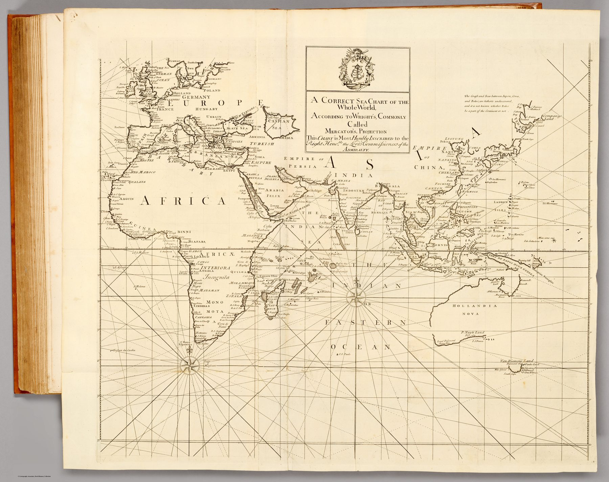

A world sea-chart on Mercator’s projection from the Atlas Maritimus & Commercialis of 1728 – the most ambitious English atlas of trade and navigation yet published for a general readership. It frames the whole globe, India included, as a single navigable surface, and carries the borrowed imprimatur of Edmond Halley.
The object
From the Atlas Maritimus & Commercialis (London, 1728), a consortium work whose descriptive text owes much to Daniel Defoe, whose sailing directions were by Nathaniel Cutler, and whose charts were largely the work of John Senex and John Harris. This world chart spans plates 1–2 (joined), drawn ‘according to Wright’s, commonly called Mercator’s, projection.’
The navigator’s projection – and Halley’s name
Mercator’s projection, mathematically justified by Edward Wright, renders a constant compass bearing as a straight line – the projection a sailor needs. The atlas promoted it, alongside Henry Wilson’s patented ‘globular projection’ used for other sheets, as a practical aid to navigation, and Edmond Halley lent the enterprise his authority with a prefatory note (in fact commending Wilson’s projection). His name became so attached that the atlas is often catalogued under it, though his hand in the charts themselves was slight.
The gaze
On a Mercator sheet every coast is equal, and India is one of them. The projection that straightens a compass bearing also flattens any difference between Bengal and Brazil: both are shores on a grid the sailor can steer by, part of the ‘coasts, ports, harbours and noted rivers’ the atlas exists to serve. Halley’s name lent that grid scientific warrant, which is why the atlas is still catalogued under it.